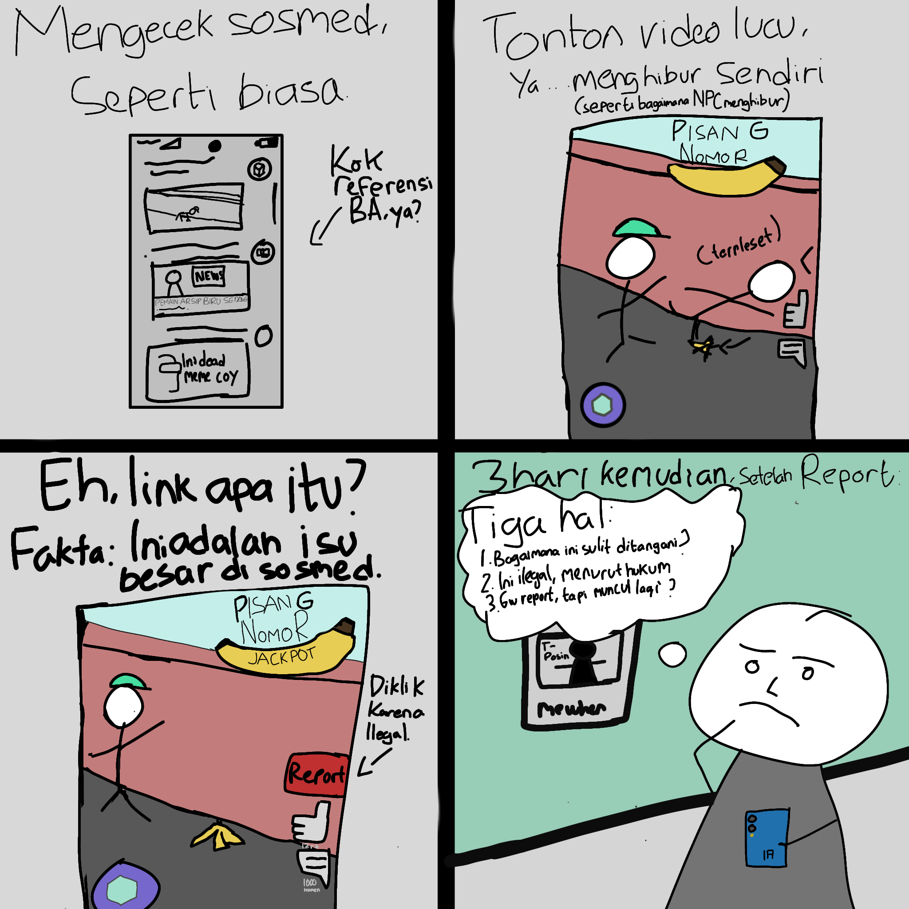

Tugas Bahasa Indonesia
Gede Artha Wira Pratama, 8, X RPL 4

Komik ini mengkritik bagaimana situs-situs
ilegal bisa menyebar, dan bagaimana pemerintah dan
moderator sosial media tersebut jarang membantu
untuk menghentikan penyebaran ini.